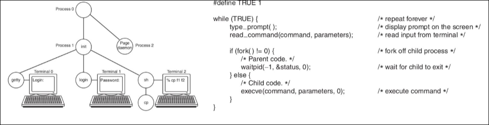
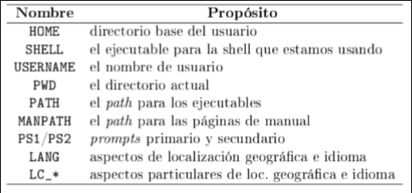
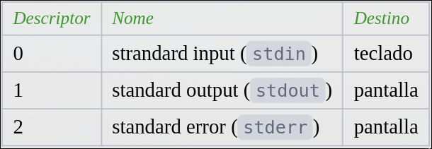

SOII · curso 2
5. Shell y Scripts · SOII
5.1 Introducción
El shell o intérprete de comandos es la interfaz del usuario con el SO, se encarga de traducir líneas de comandos en solicitudes de acción del SO. La programación shell-script es una secuencia de comandos de shell que sirve para la administración del sistema, programación de tareas repetitivas,...
En unix el shell no forma parte del kernel. Hay varios shells para unix:
- sh, csh, tcsh, ksh, powershell, etc.
- bash: shell por defecto en Linux. Tiene todas las características de sh e incluye características avanzadas. La sintaxis es muy parecida entre shells. sh tiene compatibilidad hacia delante
5.1.1 Funcionamiento del Shell
El shell es un proceso iterativo que ejecuta comandos de 2 tipos:
- Comandos internos al shell: se ejecutan en el mismo proceso y su código son funciones del código del shell.
cd,bg,alias,pwd,echo,eval, ... - Comandos externos al shell: inician un nuevo proceso y cambian su imagen por la del archivo ejecutable, su código es independiente del shell (está en los directorios indicados en la variable de entorno
$PATH).cp,cat,grep,mkdir,...
type comando: averigua el tipo de un comando

5.2 Línea de comandos
Los comandos suelen tener 3 componentes: comando [opciones] [paŕametros].
Se pueden ejecutar de 2 maneras:
- Ejecución en primer plano: el shell espera (waitpid) a que termine el comando antes de aceptar uno nuevo.
ctrl + z: finaliza el comandoctrl + c: pausa el comando
- Ejecución en segundo plano: (
comando &)el shell no espera a que termine el comando antes de aceptar uno nuevo.jobs: permite ver la lista de comandos en segundo planofg PID,bg PID: permiten mover un comando a primer plano o a segundo plano
Los comandos tienen un código de salida que se almacena en $?:
-
Si es igual a
0, el comando terminó bien -
Si no es igual a
0, el comando terminó con error -
comando1 && comando2: el segundo comando solo se ejecuta si el$?del primero es0 -
comando1 || comando2: el segundo comando solo se ejecuta si el$?del primero es distinto de0 -
history: devuelve una lista de comandos que se pueden volver a ejecutar con :- flechas
- !numero: si lo ejecutas te escribe el comando que se corresponde con ese numero en el historia
ctrl + rpermite hacer una búsqueda inversafc i jpermite repetir varios
-
man [comando]: manual -
comando help: manual de comandos internos (solo funciona en bash) -
info comando: manual más flexible o completo en hipertexto -
echo: para mostrar una línea de texto -
cat/head/tail/grep/find/sort ficherosirven para el procesamiento de texto
5.2.1 Expansión de Ficheros
Los comodines son caracteres especiales que sustituyen a otro/s para especificar varios ficheros como parámetro.
*cualquier cadena (incluso vacía)?cualquier caracter[x,x,x,...]uno de los indicados[!x,x,x,...]o[^x,x,x,...]cualquier caracter excepto los indicados
5.2.2 Otras Expansiones
- Expansión de llaves (
...{x,x,x}...) para generación de strings (echo a{1,2,3}b --> a1b a2b a3b) - Expansión de tilde para el directorio raíz de usuario (
$HOME) - Expansión aritmética (
$((expresion))o$[expresion]) para evaluar expresiones (echo $[(4+11)/3])
5.2.3 Variables de Shell
Se puede crear variables desde la línea de comandos con:
nombre='algo'(sin espacios entre el =)read nombre [Enter](read para el primer \n que encuentre, sólo lee la primera linea)
Se pueden combinar texto y variables: '... $nombre ... ' (no usar "")
-
Variables locales: visibles sólo desde el shell actual
-
Variables de entorno:
export NOMBREpara que sean visibles en todos los shells hijo -
...$nombre...para accede al contenido de una variable -
nombre=vaciar una variable -
printenvlista las variables

5.2.4 Caracteres Especiales
Son caracteres que el shell trata de forma especial:
&, *, ?, [],[!], $, ;, <, >, <<, >> , \'...'ignora todos los caracteres especiales"..."ignora todos los caracteres especiales excepto$,\,'(y la tilde torcida)\ignora el caracter especial que le sigue.
5.2.5 Redirección de Entrada y Salida
Toda la E/S se realiza a través de ficheros. Cada proceso tiene asociado 3 ficheros de E/S:

Podemos redireccionar la E/S usando:
>cambia el fichero stdout<cambia el fichero stdin<<,>>igual pero si el fichero objeto ya existe no se borra y se añade al final|stdout del primero = stdin del segundo.- Si se añade un 2 antes de estos símbolos se redireccionará al error estándar
5.2 Script
Un script o programa shell es u fichereo de texto conteniendo una secuencia de comandos de shell externos e internos que se ejecutan línea a línea.
#!/bin/bash (shebang) indica el intérprete de comandos a usar por el script, es recomendable usarlo al principio, pero no es obligatorio. En /etc/shells hay una lista con la ruta completa de los shells disponibles
Se pueden ejecutar (siempre que tengan permisos con):
- `./script.sh
bash script.sh
5.3.1 Parámetros y Variables
Los argumentos de los scripts se pasan por la línea de comandos ./script.sh [parametros]
$0nombre del script$1-$9parámetros del 1 al 9${10},...parámetros por encima del 9$#número de parámetros$*y$@todos los parámetros
Se pueden leer parámetros de un fichero o el teclado con read. Se puede usar variables de entorno directamente dentro del script.
$?código de salida del comando anterior$$PID del script actualnombre=$(comando)asigna la salida de un comando a una variable
5.3.2 Control de Flujo
for variable in lista
do
bloque de comandos usando $variable
done
for ((a=0; a<5; a++))
do
sufijo="0$a"
touch servidor_${sufijo}.data
done
while comando
do
bloque de comandos
done
until comando
do
bloque de comandos
done
break: para salir de un lazobreak n: para salir delazos continue: para saltar a la siguiente iteración de un lazo
if comando1
then
ejecuta otros comandos
elif comando2
then
ejecuta otros comandos
else
ejecuta otros comandos
fi
case valro in
patron1)
bloque de comandos
;;
patron2)
bloque de comandos
;;
*)
bloque de comandos por defecto
;;
esac
test expresion o [expresion]devuelve 0 como código de salida si laexpresiones verdadera y 1 si es falsa-dcomprueba si el parámetro es un direcotrio-ese ejecuta con todo (significa existe1)-fcomprueba si el parámetro es un fichero regular=, !=comparación entre strings-eq, -gtcomparación entre enteros!, -a, -o: not, and y or\(... \)agrupacion de expresiones
5.3.3 Funciones
Podemos organizar el código de un script definiendo funciones:
- Hay que definirla antes e usarla
- Los parámetros se almacenan por orden en las variables $n
- el código de salida de la función se especifica con:
return codigo
nombreDeLaFuncion(){
comandos
}